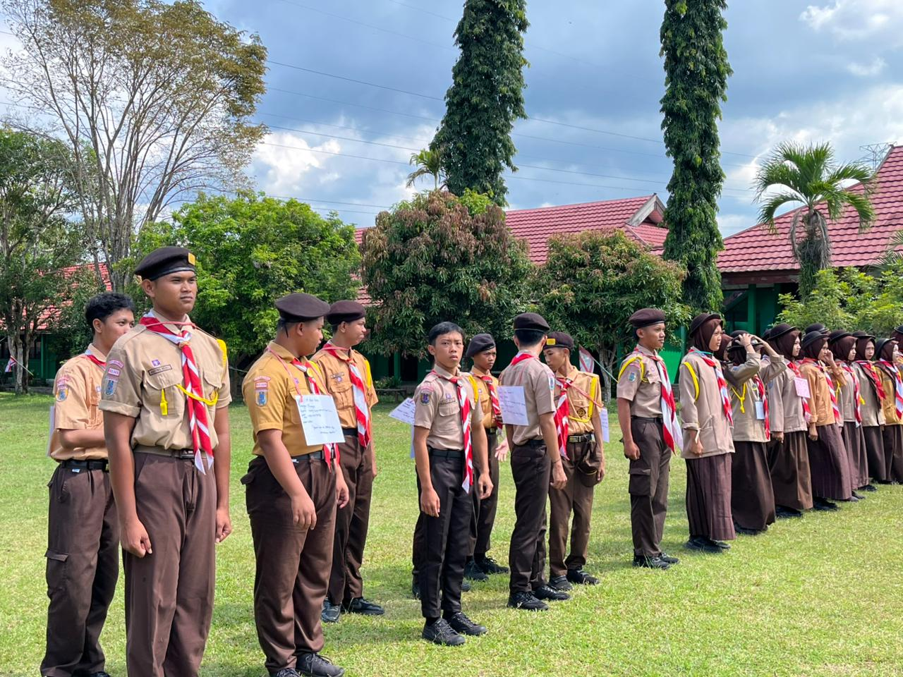
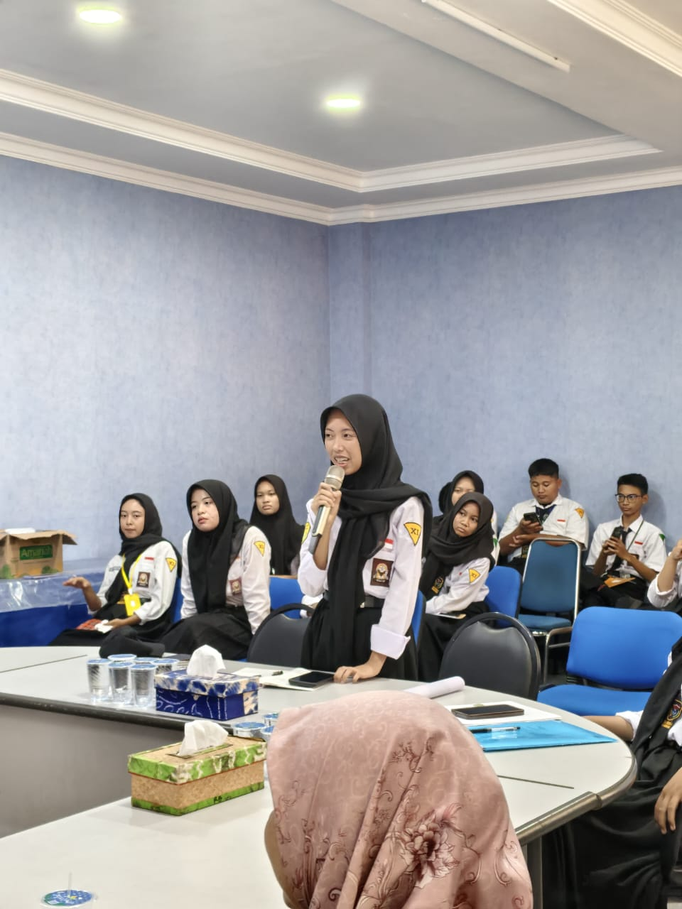
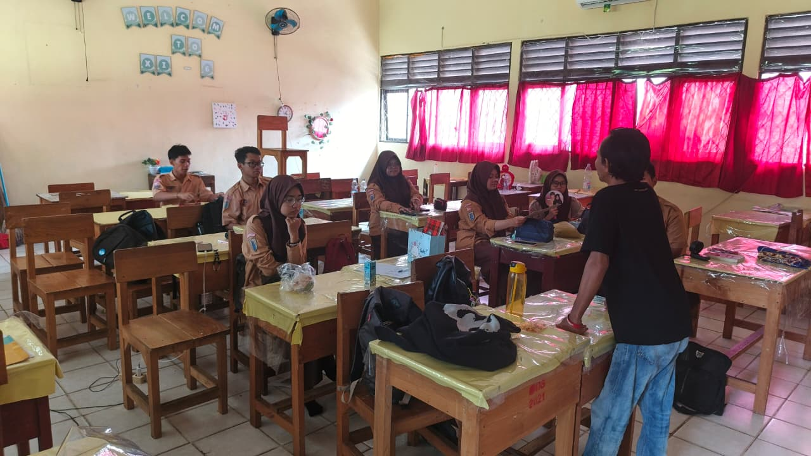

Puisi
Senja di Banjarbaru
Langit jingga memeluk kota idaman, di sudut sekolah kita menyimpan kenangan. Setiap detak jam dinding kelas...

Fotografi
Semangat Pagi Apel Senin
Potret khidmat pelaksanaan upacara bendera hari Senin. Pasukan pengibar bendera tampil memukau.
Cerpen
Misteri Ruang Musik
Konon katanya, setiap sore terdengar denting piano dari ruang musik lama. Budi yang penasaran memberanikan diri untuk mengeceknya...

Pengumuman
Open Recruitment CHRONICA
Dicari! Siswa-siswi berbakat untuk bergabung menjadi jurnalis muda sekolah. Cek syaratnya di sini.

Dokumentasi